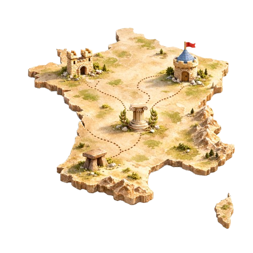
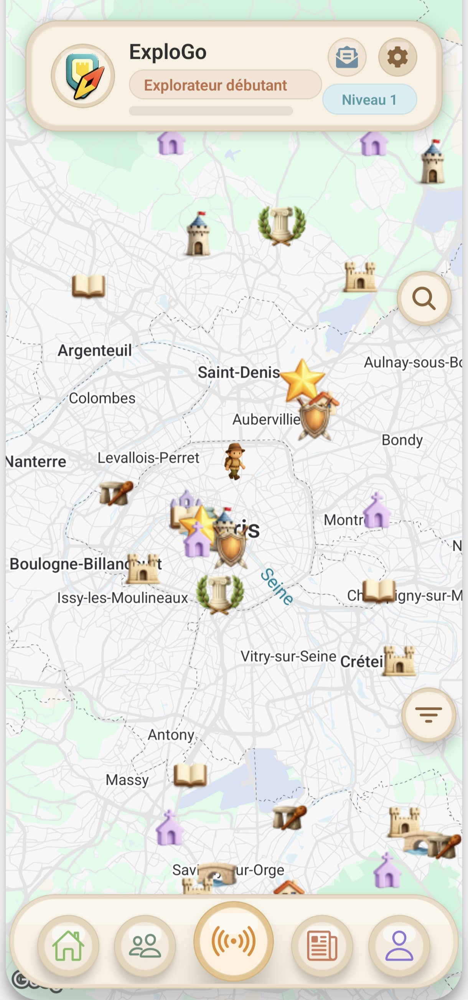

Explorateurs
Balades, scans, progression : transforme tes sorties en aventure culturelle.
Découvrir
Partez en immersion dans l’histoire et le patrimoine avec ExploGo.
Autour de vous, marchez
sur
les traces des grands personnages et des batailles décisives, explorez châteaux, églises et
cathédrales, demeures remarquables, monuments antiques et vestiges de la Préhistoire grâce à la
géolocalisation en temps réel.
Créez votre profil, collectionnez les lieux, gagnez
expérience et
niveaux, relevez des défis et partagez vos découvertes.
Chaque récit, court et sourcé, vous
plonge dans une visite vivante. ExploGo transforme chaque balade en aventure historique
immersive.


Détails
Repère des lieux autour de toi et explore par zone, ville ou quartier.
Une application complète pour tous les usages.
ExploGo s’appuie sur plus de 20 000 points d’intérêt. Données issues de bases certifiées et reconnues, supervisées par un professeur d’Histoire-Géographie.
Choisis ta plateforme.
Réponses rapides. Le reste sur les pages dédiées.
Pour scanner un lieu, il faut se rendre à proximité (environ moins de 100 mètres). Une fois scanné, le lieu est ajouté à tes découvertes.
Les données proviennent de bases reconnues et sont encadrées par un professeur d’Histoire-Géographie, afin d’assurer une bonne fiabilité historique.
Oui : ExploGo peut servir de support pour des activités pédagogiques, des sorties et des projets, en rendant l’histoire plus interactive.
Oui : en visitant une ville, tu peux repérer des lieux, comprendre les événements associés et construire un parcours de découverte.